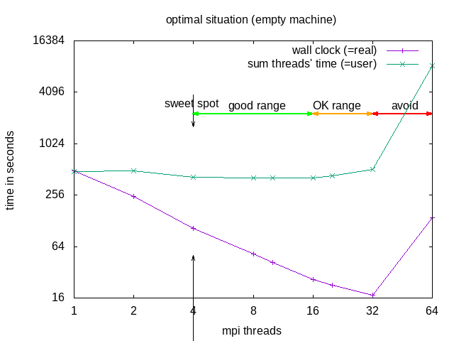

Examples of slurm scripts
Victor Eijkhout: Introduction to High-Performance Scientific Computing

A single thread job
The following script sets up the environment for ORCA and runs a job named ORCA_test using one thread and 2GB of memory, with job.inp as an input file. Calculations will be performed in a scratch directory on a node, not in your directory. Results will be written into job.log output file.
#!/bin/bash
#SBATCH --job-name=ORCA_test ### job name
#SBATCH --ntasks=1 ### number of threads
#SBATCH --mem=2GB ### memory
## load ORCA environment
module load rocky8/all
module load orca/5.0.4
export orcadir=/gpfs/mariana/software/green/Orca/orca_5_0_4_openmpi_411/
#Create scratch directory
SCRATCH=/state/partition1/$SLURM_JOB_ID
mkdir -p $SCRATCH
cp $SLURM_SUBMIT_DIR/* $SCRATCH/
cd $SCRATCH/
#Run calculations
$orcadir/orca job.inp >> job.log
#Copy files back to working directory
cp $SCRATCH/* $SLURM_SUBMIT_DIR
rm *tmp*
#Clean after yourself
rm -rf $SCRATCH
An OpenMP parallel job
The following script launches job named HelloOMP using OpenMP. For this job slurm reserves one node and 12 threads. Maximum run time is 10 minutes.
Even though it is `--cpus-per-task` slurm reserves threads, not CPU, since "cpu" in SLURM's language is the smallest unit.Note: Each thread needs to do enough work to compensate for the time it took to launch it. Therefore it is not useful to run small/short jobs in parallel.
#!/bin/bash
#SBATCH --job-name=HelloOMP ### job name -J
#SBATCH --time=00:10:00 ### time limit -t
#SBATCH --nodes=1 ### number of nodes -N
#SBATCH --ntasks-per-node=1 ### number of tasks (MPI processes)
#SBATCH --cpus-per-task=12 ### number of threads per task (OMP threads)
## load environment
export OMP_NUM_THREADS=$SLURM_CPUS_PER_TASK
## run job
./hello_omp
NOTE: Parallel does not (necessarily) mean faster!!! Parallel execution introduces overhead (starting threads, communication)! For optimal execution time and optimal use of resources one needs to test and find the sweet spot.
A script for MPI parallel job (OpenFOAM)
The following script reserves 4 CPU-cores for 10 hours
(since mpirun uses cores by default),
loads the OpenMPI module, the OpenFOAM variables, changes into the case directory and runs the typical commands necessary for a parallel OpenFOAM job. It also sets OpenMPI transport properties to use Ethernet TCP!
It would be possible to request all tasks to be on the same node using the -N and --tasks-per-node options, this would be useful to make use of the very low latency shared memory communication of MPI (provided the job fits into the RAM of a single node).
Note: Each task needs sufficient work to do to make up for the time spent with inter-process communication. Therefore it is not useful to run small/short jobs in parallel.
#!/bin/bash -l
#SBATCH -n 4 ### number of CPUs
#SBATCH -t 10:00:00 ### run time
#SBATCH -J openfoam-damBreak ### job name
#SBATCH --partition=green-ib ### partition
## load environment
module load rocky8-spack
module load openfoam
## run program
cd $WM_PROJECT_USER_DIR/damBreak/damBreak
blockMesh
decomposePar
setFields
mpirun -n $SLURM_NTASKS interFoam -parallel
reconstructPar
NOTE: Parallel does not (necessarily) mean faster!!! Parallel execution introduces overhead (starting threads, communication)! For optimal execution time and optimal use of resources one needs to test and find the sweet spot.

The division into the areas is a combined decision taking into account “real” (wall clock) and “user” (summed time of all threads) time (from the time command). “Wall clock” (real) time is the time one needs to wait till the job is finished, “Summed thread time” (user) is the sum of the times that all individual threads needed, it should be roughly user = numtreads x real. For parallel programs, one can expect that “user” time of the parallel run is larger than for the sequential, due to communication overhead, if it is smaller, that probably means the individual threads could make better use of cache.
| area | why | explanation | when to use |
|---|---|---|---|
| sweet spot | minimal "user" time | = minimal heat production, optimal use of resources | regular use |
| good range | linear speedup for "real", with constant or slightly increasing "user" | approaching deadline | |
| OK range | slightly less than linear speedup for "real", and slightly increasing "user" | pushing hard to make a deadline | |
| avoid | ascending slope in the diagram for "real" and "user" | one actually needs to wait longer compared to the case with fewer cores | NEVER |
Recommended in this case would be to request 8 threads -n 8 --ntasks-per-node 8 but use mpirun -n 4. OpenFOAM does not seem to benefit from hyperthreading
.
An array (parameter sweep) job
Tis script reserves 10 threads and run array of jobs in range of 13-1800. The `$SLURM_ARRAY_TASK_ID` variable calls the input files in the given range in turn and data is written in output files arrayjob, which also contain job allocation ID and job array index number (`-%A` and `-%a`, respectively).
#!/bin/bash
#SBATCH --job-name=array-parameter-scan ### job name
#SBATCH --output=arrayjob-%A-%a ### output file
#SBATCH --ntasks=10 ### number of threads
#SBATCH --array=13-1800 ### Array tasks for parameter sweep
## run job
./myarrayjob $SLURM_ARRAY_TASK_ID
A GPU job
The GPU scripts can be run only on amp.
The following script reserves 1 gpu (Nvidia A100), uses gpu partition and has time limit 0f 10 minutes.
#!/bin/bash
#SBATCH --job-name=uses-gpu ### job name
#SBATCH -p gpu ### use gpu
#SBATCH --gres=gpu:A100:1 ### specifying the GPU type
#SBATCH -t 00:10:00 ### time limit
## run job
./mygpujob
This script reserves 4 gpu without specifying the GPU type.
#!/bin/bash
#SBATCH --job-name=uses-gpu ### job name
#SBATCH -p gpu ### use gpu
#SBATCH --gres=gpu:4 ### number of gpu
#SBATCH -t 00:10:00 ### time limit
## run job
./mygpujob
A job using the scratch partition (sequential or OpenMP parallel)
The following script creates a directory named scratch-%x-%j (where -%x is a job name and %j is a jobid of the running job). This scratch directory is done on the scratch partition of the node to provide fast local storage, that does **not** require network. After, slurm script runs the job, and copies the output files back into the permanent home-directory once the job is completed.
#!/bin/bash -l
#SBATCH -N 1 ### number of nodes
#SBATCH -t 00:10:00 ### time limit
#SBATCH -J using-scratch ### job name
## creates scratch scratch directory, copy files from working directory to scratch directory, goes to scratch directory
mkdir /state/partition1/scratch-%x-%j
cp -r $HOME/were/input/is/* /state/partition1/scratch-%x-%j/
cd /state/partition1/scratch-%x-%j/
## run job
myjob
## copy files from scratch directory to working directory and remove scratch directory
cp -r /state/partition1/scratch-%x-%j/* $HOME/were/input/is
rm -rf /state/partition1/scratch-%x-%j
Please note that the scratch is not shared between nodes, so parallel MPI jobs that span multiple nodes cannot access each other’s scratch files.